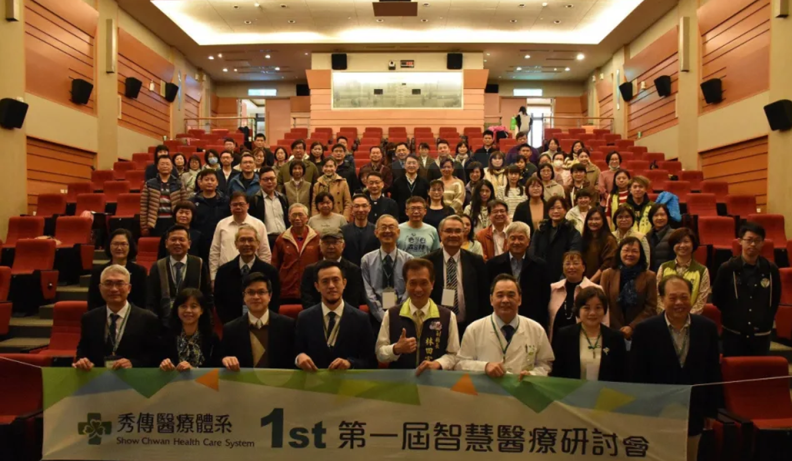

傅妍瑜的個人網頁
| 學號 |
姓名 |
學經歷 |
| 111034034 |
傅妍瑜 |
國小：永興國小
國中：永靖國中
高中：員林高中 |
個人照片：

自我簡介：
我是傅妍瑜，住在彰化縣永靖鄉，從小生活在鄉下地區，
家裡種了些蔬菜和水果，也有養牲畜，例如雞、鴨、鵝，
所以能夠自給自足。我們家是小家庭，我是獨生女，
爸爸是送貨司機兼農夫，媽媽是一位會計，家庭氣氛十分和諧。
我個性內向，很安靜，有時候會被誤會以為我很不好相處，
但是其實我是很相處的。我做事非常嚴謹細心，
且會有耐心的處理任何事情。我的專注力強，讀書時不容易被打擾。
謝謝大家瀏覽！
111-1 修課列表
| |
星期一 |
星期二 |
星期三 |
星期四 |
星期五 |
| 1 |
動物健康與照顧 |
文學賞析 |
|
健康與生活 |
共通英語文：中級中階班 |
| 2 |
動物健康與照顧 |
文學賞析 |
|
健康與生活 |
|
| 3 |
|
體育 |
|
會計學 |
|
| 4 |
|
體育 |
|
會計學 |
|
| N |
|
|
|
|
|
| 5 |
共通英語文：實作 |
|
共通英語文：中級中階班 |
經濟學 |
|
| 6 |
共通英語文：實作 |
|
共通英語文：中級中階班 |
經濟學 |
|
| 7 |
會計學 |
資訊與科技 |
學輔時間 |
歷史與文化 |
經濟學 |
| 8 |
會計學 |
資訊與科技 |
|
歷史與文化 |
經濟學 |
| 9 |
會計學 |
服務與學習-實作課 |
服務與學習-實作課 |
服務與學習-實作課 |
|
人工智慧應用新聞
彰濱秀傳第一屆智慧醫療研討會 分享醫療AI的應用提升醫療照護品質
彰濱秀傳醫院舉辦「秀傳第一屆智慧醫療研討會」，分享醫療AI的應用及虛擬醫院照護經驗，希望能藉由簡化行政及醫療照護流程，
改善醫療成效，增加醫療服務可近性，進而提升醫療系統效能及醫療照護品質，照顧更多病人，避免醫護人員過勞。
院長黃士維表示，秀傳醫療體系近年來致力發展智慧科技輔助醫療臨床照護工作，發展重點涵蓋有人工智慧AI整合(腦出血、肺癌、語音辨識)、
資通訊整合(急診、護理站、洗腎室、開刀房電子白板應用)、遠距照護IOT設備應用(華碩VIVOwatch、全家寶)、3D影像模型應用於手術、
個人健康服務及居家照護的雲端服務，這些應用分別於醫療臨床、護理照護、高檢服務、出院病人的持續照護等，未來更朝虛擬醫院概念，可以把醫療
服務傳遞更遠更廣。
秀傳資訊長李文欽指出，此次研討會除了秀傳醫療體系多年智慧醫療成果發表之外，更邀請到各界產官學專家分享智慧醫療新趨勢，包括衛生福利福部龐
一鳴處長分享數位醫療與創新、台北榮總鄭浩民主任分享應用P4醫療模式預測心血管老化及處理、中國附醫曾皓陽主任分享臨床商業智慧臨床管理應用。
會中也有一場智慧醫療趨勢座談會，邀請科技界重量級專家對談未來發展趨勢，包括華碩雲端公司吳漢章總經理、台灣人工智慧學校蔡明順校務長、
捷格科技公司左典修董事長、高雄榮總研創中心楊宗龍創新長。

李文欽資訊長進一步表示，智慧醫療就是導入物聯網、雲端運算、高階分析等技術至現有醫療流程。此次研討會廣泛討論科技在智慧醫療產業的應用領域，進一
步驅動遠距醫療、整合型電子病歷管理系統、患者穿戴型裝置、線上醫療諮詢與掛號預約或是AI看診等技術進入市場。
新聞連結
按此前往新聞頁面
新聞心得
這篇新聞是在報導彰濱秀傳與AI人工智慧在醫療上面的結合與應用。我之所以會選擇這篇是因為我住在彰化，想找一篇報導彰化的新聞，
加上我對醫療方面有些微興趣，不過因為諸多原因未往這面發展，所以就選擇了這篇新聞。如今科技越來越發達，在生活中更是無所不在。
醫療方面近年逐漸結合人工智慧，提升整體照護的效率和品質，讓醫療服務可以傳遞出去，也讓醫護人員不會過度疲勞。
謝謝大家！